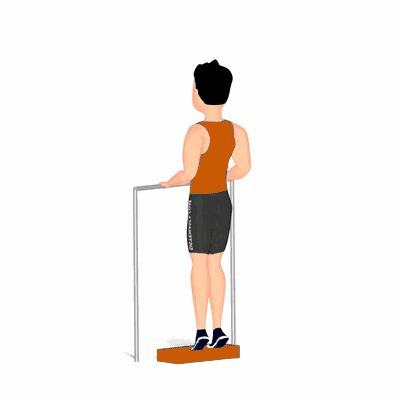

Flexão Plantar

Exercício para fortalecimento e hipertrofia dos músculos das panturrilhas, possuindo diversas variações. Realiza com o auxílio de um step e algumas anilhas posicionadas no solo.
Ficha Técnica
Tipo: Musculação
Grupo Muscular: Perna
Aparelho: Nenhum
Músculos: Nenhum
Como realizar
- Suba sobre um degrau ou alguma superfície que permita manter os calcanhares sem o contato com o solo;
- Apoie apenas com as pontas dos pés, manter a coluna reta e abdome contraído;
- Empurre o seu corpo para cima, elevando os calcanhares o máximo que conseguir;
- Concentre a força nos músculos da panturrilha;
- Retorne à posição inicial lentamente;
- Repita os movimentos, conforme o número de repetições orientado pelo professor.
 RC STORE
RC STORE